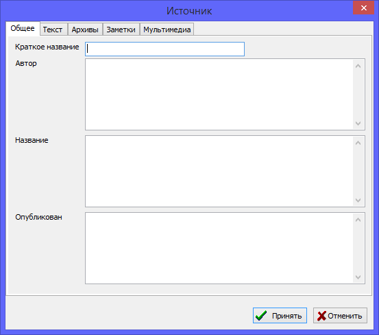

Источником является запись о любом частном документе и деле архивных фондов, из которого была взята какая-то информация о персонах. Записи источников служат для следующих основных целей: хранить специфическую информацию о происхождении той или иной информации, объединять и упрощать поиск различных персон, семей и событий, упомянутых в одном документе.
Это может быть Свидетельство о рождении или смерти, ревизская сказка, метрическая книга, исповедальная книга и другие документы.
Каждая ссылка на источник снабжается двумя дополнительными параметрами: лист/страница из источника, где было упоминание, и уровень доверия к этой информации. Снабжение ссылок на источники указанием страниц удобно в тех случаях, когда нужно вновь вернуться к тому-же источнику и просмотреть его содержимое. Указание уровня доверия полезно для того, чтобы в любой момент времени, когда во время исследования вы возвращаетесь к какому-то человеку и просматриваете откуда была взята информация, можно было сразу увидеть, насколько можно ей доверять. Если документ был с помарками, повреждениями и не вся информация была уверенно прочитана - полезно сразу указать "Сомнительный уровень доверия", чтобы позже не сделать ложных выводов.
Параметр уровня доверия также используется для автоматического расчета показателя достоверности информации о персоне в блоке статистики для анализа средних показателей, а также в диаграммах деревьев для наглядного информирования пользователя.
Также у источников можно указывать Архив, где находится этот документ. Следует понимать, что архивом может быть не только государственное или частное архивное учреждение, это может быть также и частная коллекция или определенное место хранения документов.

Все имеющиеся в базе данных источники доступны через единую таблицу на закладке "Источники" основного рабочего окна. Справа от таблицы - в сводке по записи, можно просмотреть всю информацию по источнику, а также список всех других записей или фактов, которые ссылаются на данную.
Также смотрите: Персоны, Семьи, События/факты, Ссылки на источники, Заметки, Мультимедиа-материалы, Архивы, Адреса.